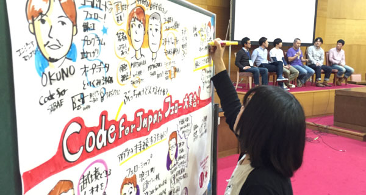
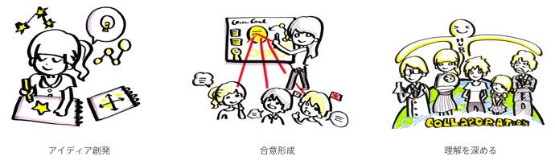
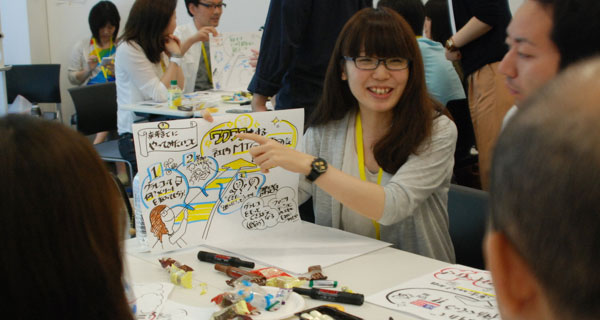

グラフィックレコーディングとは、会議での議論やカンファレンスの流れを視覚化し、
参加者へ共有する手法です。参加者の思考発話内容をリアルタイムで視覚的にわかりやすく伝えることができるので、
アイディア創発の場や、会議での合意形成を促します。


わたしたちは、「グラフィックレコーディングを通して、ヒトの想いと想いをつなげる架け橋となるような場を、
世の中に提供していきたい」と考え、集まった有志の団体です。いつの日か、グラフィックレコーディングが
暮らしの中で当たり前のように使われる日を夢見て、活動を推進しています。
楽しみながらグラフィックレコーディングを学び、トレーニング方法を体験できる、独自のワークショップを提供しています。